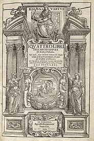
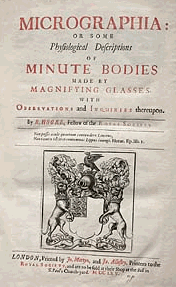

| About IR |
| Editors |
| Author instructions |
| Copyright |
| Author index |
| Subject index |
| Search |
| Reviews |
| Register |
| Home |
Product review:digital imaging
Octavo, 580 Second Street,
Suite 220
Oakland, CA
94607-3543 USA .
Octavo was established about four years ago by John Warnock, the co-founder of Adobe Systems, with the aim of making available digital copies of rare books and manuscripts on CD-ROM. The company now has about thirty titles, ranging from Palladio's 'I quattro libri dell'architectura' to Hooke's 'Micrographia', at prices from $20 to $75.
The CD I have for review, however, is of Galileo Galilei's 'Sidereus Nuncius' (The starry messenger), the report on his lunar observations with a 20x telescope, which he also used to discover and study the motions of the moons of Jupiter. It was these observations and his deduction from them that the Copernican view of the earth as a body circling the sun was correct that got him into his troubles with the Church.
What are the advantages of the presentation of a a book such as this in the form of a CD? There are, of course, several. In the first place, the rare book is only going to be in one, or at most, a few places, whereas the CD can be everywhere - any library that wishes to have a copy of the book, can have the CD and, perhaps more to the point, any scholar of the history of science can have the book, since the $25 it costs is likely to be less that a single visit to the nearest available original copy. Secondly, the existence of the digital copy secures the preservation of the original - at least as far as this can be done, since human error, accidents, earthquakes, war and floods can all reduce the number of rare books available. Even if the final copy of a text disappears, the digital copies ensure that we know exactly what the book contained and how it was presented. Thirdly, the digital text can be augmented with commentaries and translations and the original text and images can be copied and pasted into modern texts, thereby illuminating modern scholarly texts in a way that would have been very difficult and very costly before the advent of digital imaging. Finally, one has all the possibilities of manipulating the digital images and the translated text, to search for words (in Latin or in English in the case of this text), and to zoom to any required level to examine the detail of drawings and manuscript illustrations.
Figure 1 gives some idea of the way the digitized work is presented: unusually, both pages at an opening are digitized together, giving a more accurate impression of the original work than would page-by-page digitization.
Figure 2 shows how a high magnification of the image can reveal a great deal of detail for scholarly exploration.

Another CD contains the poems of William Shakespeare in an edition of 1640:

which includes an essay on the specific book used in the digitization process by Arthur Freeman who notes, in respect of a variant spelling of the publisher's name as 'Bensen', rather than 'Benson':
"Ultra-violet light," Hayward wrote, "has subsequently revealed that [the bookbinders] Rivière in repairing the title-page [for Quaritch], touched up the imprint with a pen and very skillfully but mistakenly altered Benson to Bensen ..."This was not of course an intentional forgery, but a blunder which grew into a still persistent canard. Specialists in rare books have to keep their eyes and ears open.
Some of these CD-ROM editions can also be downloaded as .pdf files, for a fraction of the CD-ROM price, e.g., $6.00 for the Galileo rather than $25.00.
Octavo, however, is much more than a publisher of digital copies of rare works, although that was the original vision of the founder. Octavo has now acquired not only a great deal of competency in digitisation, but also the necessary hardware and software components through which to apply that competency. It is now in the business of working with libraries in partnerships that will secure libraries' rare resources and provide digital products based on those resources that can bring income both to Octavo and to the partner library. Octavo can also provide a state-of-the-art digital imaging laboratory for institutions that wish to implement a full-scale digitisation programme, as well as providing consultancy on digitisation strategy and business planning. The laboratory costs something in the order of $100,000 and includes:
- Wide-body digital camera with optics suitable for digital imaging
- Ultra high-resolution (10,500 x 12,600 pixels), tri-linear digital scanning system
- Cool full-spectrum, non-fluorescent lighting (safest possible for originals)
- High-speed FireWire interface for camera system and local disk storage
- Multiprocessor Apple Power Macintosh G4 computer for rapid image processing and camera management
- 22-inch color-managed LCD display
- Image-handling and management software
- Scale Eight Media Port router connections to secure, redundant storage
- Local 1400 dpi archival pigment color inkjet proof printer
- Flexible copy stand, adjustable camera stand, and related furniture
- Imaging procedures and standards
- Training
If a library wishes to outsource its digitisation programme, Octavo has the facilities available, through partnerships with libraries, across the USA and, shortly, in Europe and Asia. As an extension of this service, Octavo can offer storage and Web access facilities for digitised resources.
As an example of how Octavo is working with libraries, we can look at the Library of Congress, which has chosen the company to digitise its copy of the Gutenberg Bible, which is one of only three perfect vellum copies available anywhere in the world. This work began in March 2002 and, as the pages are digitised they are available, a short time later, on the Web.
The need for digital preservation is increasingly seen as the only sure way to 'preserve', albeit in a different form, such treasures as the Gutenberg Bible and, clearly, Octavo's state of the art technology provides an interesting option for any library that holds rare books, manuscripts and maps.